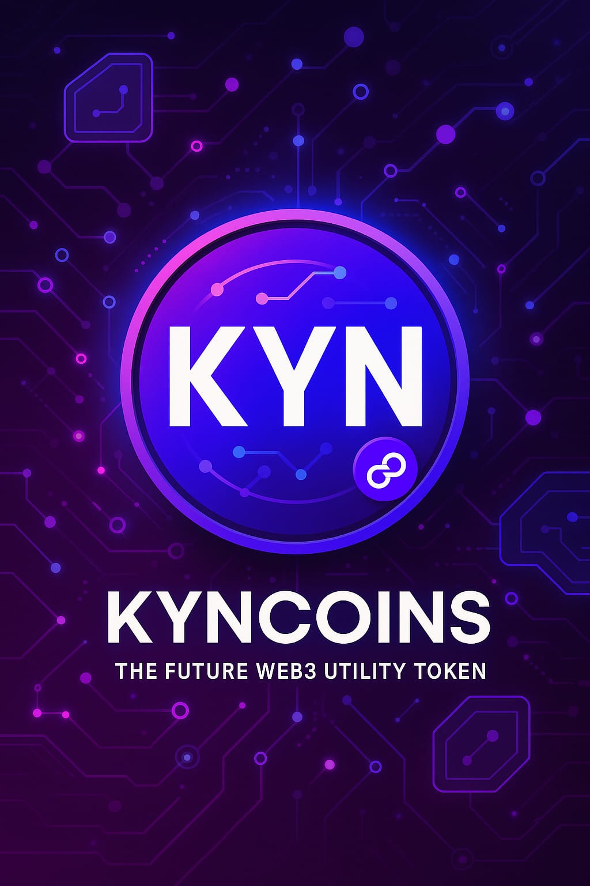
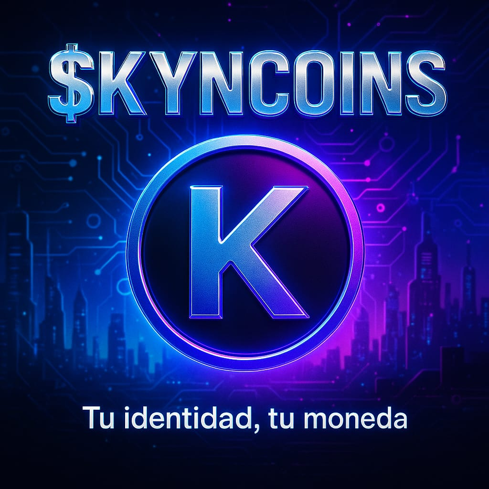
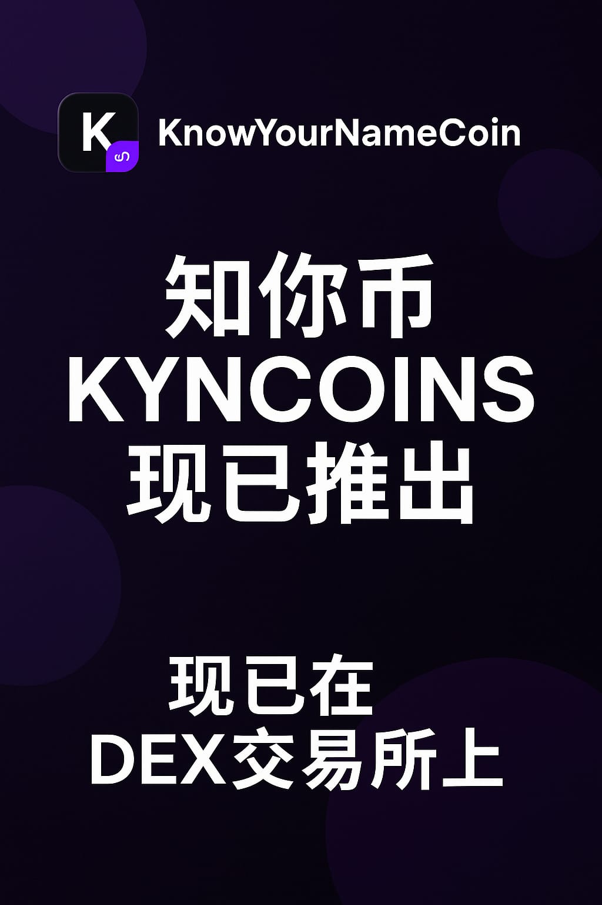

KYNCOINS
Token: Know Your Name
Symbol: KYNCOINS
Red: Polygon PoS

KYNCOINS (English)
KYNCOINS is a token on the Polygon PoS network designed for internal payments within its ecosystem:
- Gamer economy and GPU rental
- Used as credit to obtain file hosting space
- Generation and storage of links for files on the decentralized IPFS network
- CID links with metadata for ERC-721 tokens (NFTs)
💱 Get $KYNCOINS on DEXTools

KYNCOINS (Español)
KYNCOINS es un token en la red Polygon PoS diseñado para pagos internos dentro de su ecosistema:
- Economía gamer y alquiler de GPU
- Uso como crédito para obtener espacio de almacenamiento
- Enlaces IPFS con CID para archivos distribuidos
- Metadatos para tokens ERC-721 (NFTs)
💱 Consíguelo en DEXTools

KYNCOINS（中文）
KYNCOINS 是基于 Polygon PoS 网络发行的代币，旨在用于其生态系统内的内部支付：
- 游戏经济和 GPU 租赁
- 作为积分用于获取文件存储空间
- 通过 CID 实现不可变的 IPFS 文件共享
- 用于 ERC-721 NFT 的元数据和图像链接
💱 在 DEXTools 上获取 $KYNCOINS
Email: kyncoins@duck.com
Contrato: 0x80832B3C21A83bE7411a37322d43fF71A7f672e9